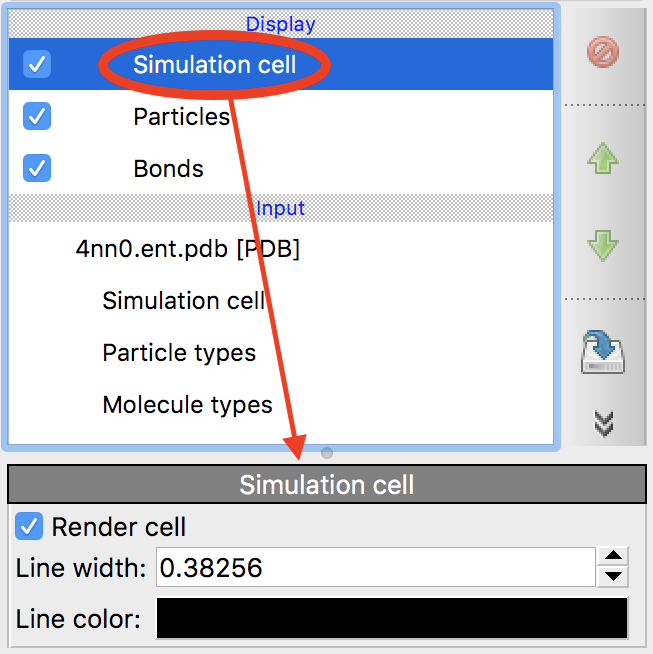

Simulation cell
{kind=link}
This visual element renders the simulation cell as a wireframe box.
Parameters
- Visible in rendered images
Controls the visibility of the simulation cell in rendered images and animations. If you turn this option off, the cell still remains visible in the interactive viewports of OVITO. To hide it in the interactive viewports as well, uncheck the box next to the “Simulation cell” visual element in the pipeline editor.
- Line width
OVITO renders the simulation cell edges as thin cylinders of finite diameter. This parameters controls the diameter of these cylinders in units of length of the simulation. When importing a new simulation cell, the line width is automatically configured by OVITO depending on the overall size of the simulation cell.
- Line color
The color used for rendering the cell edges.
Note that the Line width and Line color settings control how the cell appears in rendered images of the scene. In the interactive viewports of OVITO, the cell is always rendered as a white wireframe model.
See also
ovito.vis.SimulationCellVis (Python API)